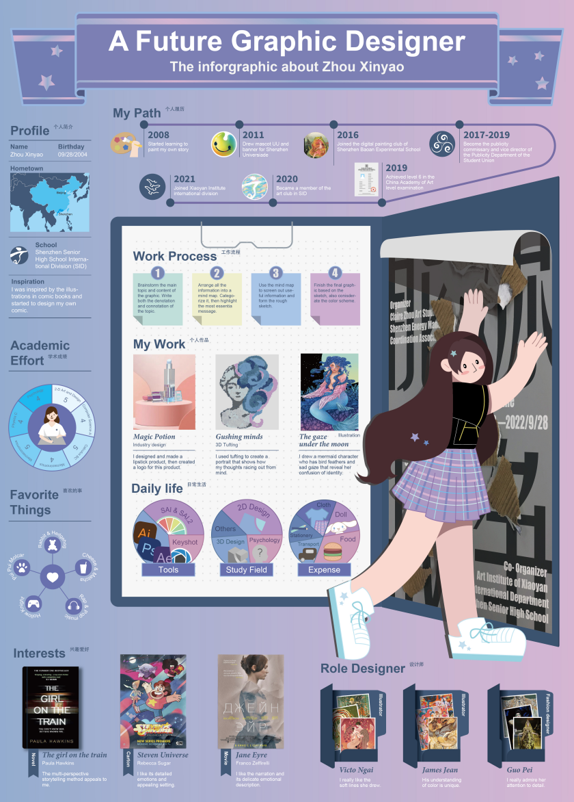

Last summer, I attended a summer program hosted by Sung Hwan Jang, a Korean pinoeer in inforgraphic design. He is also the president of the Infographics Laboratory 203. I was impressed by his works and made my own infographic with Adobe Illustrator. It shows many aspects of me: my art experience, hobbies, favorite artwork, etc. This infographic was also included in my college application portfolio.
